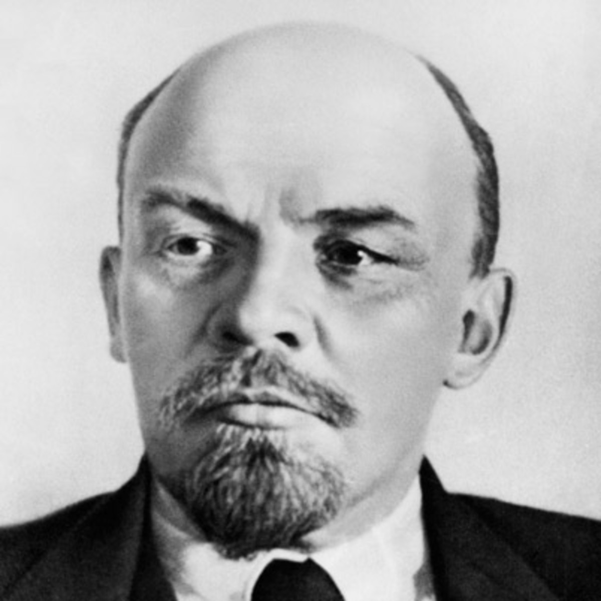
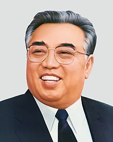

As the leader of the Bolsheviks, Vladimir Lenin was the first head of state of Soviet Union, who did his bit to revive the Soviet economy through his New Economic Policy. He wasn’t too fond of democracy, and was also the mastermind behind Red Terror that crushed dissidence. He died in 1923, and is still revered by leftists around the world.
Preceeded by Lenin, some called him the saviour of the Soviet Union, as he was known for defeating the Nazis and making the Soviet Union a nuclear as well as an industrial superpower. On the other hand, as a brutal dictator, he had also unleashed the millions of ordinary citizens who died in labour camps, or were simply shot dead.

Mao Zedong, also known as Chairman Mao, who was the son of a prosperous peasant in Shaoshan, Hunan, was a Chinese communist revolutionary who became the founding father of the People's Republic of China. Ideologically a Marxist–Leninist, his theories, military strategies, and political policies are collectively known as Maoism.

Castro was a Cuban cmmunist revolutionary and politician who governed the Republic of Cuba as Prime Minister and President. As a Marxist–Leninist and Cuban nationalist, Castro also served as the First Secretary of the Communist Party of Cuba, making Cuba become a one-party communist state, while industry and business were nationalized and state socialist policies were implemented throughout society.

Kim Il-Sung, original name Kim Song-Ju, was the first communist leader of North Korea from 1948 until his death in 1994. He was the country’s premier from 1948 to 1972, chairman of its dominant Korean Workers’ Party, and president and head of state from 1972. He was the one who authorized the invasion of South Korea in 1950, triggering an intervention in defense of South Korea by the United Nations led by the United States.
 Go back to the top